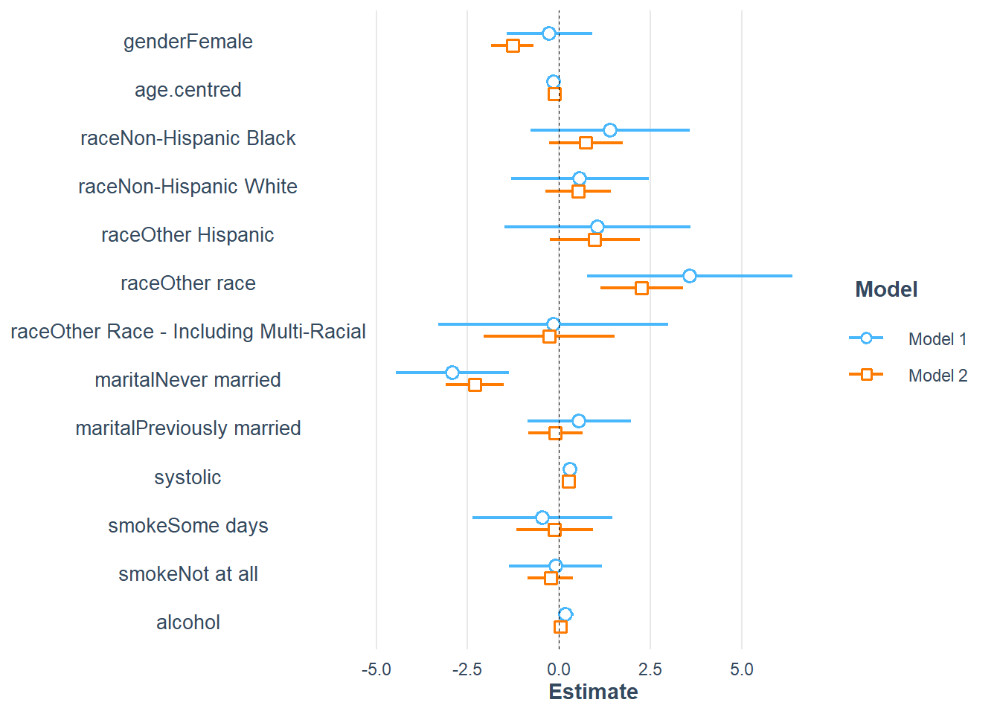

Show the code
load("Data/researchquestion/Analytic2013.RData")Part 2: Analysis of downloaded data:
This tutorial provides a comprehensive guide to NHANES data preparation and initial analysis using R. The tutorial covers topics such as loading dataset, variable recoding, data summary statistics, and various types of regression analyses, including bivariate and multivariate models. It also delves into dealing with missing data, first by omitting NA values for a complete case analysis and then using a simple imputation method. The guide is designed to walk the reader through each step of data manipulation and analysis, with a focus on avoiding common pitfalls in statistical analysis.
We are continuing to use the article by Li et al. (2020) as our reference. DOI:10.1038/s41371-019-0224-9.
For those who prefer a video walkthrough, feel free to watch the video below, which offers a description of an earlier version of the content.
The following code chunk loads an RData file named that was saved in the previous step. The RData file typically contains saved R objects like data frames, lists, etc.
load("Data/researchquestion/Analytic2013.RData")The following code lists all the objects in the current workspace.
ls()
#> [1] "analytic.data"The following shows the column names of the analytic.data data frame.
names(analytic.data)
#> [1] "SEQN" "RIAGENDR" "RIDAGEYR" "RIDRETH3" "DMDMARTL" "WTINT2YR"
#> [7] "WTMEC2YR" "SDMVPSU" "SDMVSTRA" "BPXDI1" "BPXSY1" "SMQ040"
#> [13] "ALQ130"The following provides summary statistics for the column BPXDI1 in the analytic.data data frame.
summary(analytic.data$BPXDI1)
#> Min. 1st Qu. Median Mean 3rd Qu. Max. NA's
#> 0.00 58.00 66.00 65.77 76.00 122.00 3003First, we need to understand the data well. What is the common support in all of the population?
| Variable | Target |
|---|---|
| SEQN | Both males and females 0 YEARS - 150 YEARS |
| RIAGENDR | Both males and females 0 YEARS - 150 YEARS |
| RIDAGEYR | Both males and females 0 YEARS - 150 YEARS |
| RIDRETH3 | Both males and females 0 YEARS - 150 YEARS |
| DMDMARTL | Both males and females 20 YEARS - 150 YEARS |
| WTINT2YR | Both males and females 0 YEARS - 150 YEARS |
| WTMEC2YR | Both males and females 0 YEARS - 150 YEARS |
| SDMVPSU | Both males and females 0 YEARS - 150 YEARS |
| SDMVSTRA | Both males and females 0 YEARS - 150 YEARS |
| BPXDI1 | Both males and females 8 YEARS - 150 YEARS |
| BPXSY1 | Both males and females 8 YEARS - 150 YEARS |
| SMQ040 | Both males and females 18 YEARS - 150 YEARS |
| ALQ130 | Both males and females 18 YEARS - 150 YEARS |
| - | - |
Both males and females 20 YEARS - 150 YEARS. The study should be restricted to age 20 and +.
require(car)
summary(analytic.data$BPXSY1)
#> Min. 1st Qu. Median Mean 3rd Qu. Max. NA's
#> 66.0 106.0 116.0 118.1 128.0 228.0 3003
summary(analytic.data$BPXDI1)
#> Min. 1st Qu. Median Mean 3rd Qu. Max. NA's
#> 0.00 58.00 66.00 65.77 76.00 122.00 3003
# what is 0 blood pressure?
# change all 0 to NA
analytic.data$BPXDI1 <- recode(analytic.data$BPXDI1, "0=NA") #create a new variable
analytic.data$blood.pressure <- analytic.data$BPXDI1 # delete old variable
analytic.data$BPXDI1 <- NULL# check summary
summary(analytic.data$blood.pressure)
#> Min. 1st Qu. Median Mean 3rd Qu. Max. NA's
#> 4.00 58.00 68.00 66.54 76.00 122.00 3086The RIDRETH3 column is recoded to simplify racial categories.
analytic.data$RIDRETH3 <- recode(analytic.data$RIDRETH3,
"c('Non-Hispanic Asian','Other Race - Including Multi-Rac')='Other race'")
analytic.data$race <- analytic.data$RIDRETH3
analytic.data$RIDRETH3 <- NULL
table(analytic.data$race,useNA="always")
#>
#> Mexican American Non-Hispanic Black Non-Hispanic White Other Hispanic
#> 1730 2267 3674 960
#> Other race <NA>
#> 1544 0Age values are centered around the mean age for those who are 20 years or older.
summary(analytic.data$RIDAGEYR)
#> Min. 1st Qu. Median Mean 3rd Qu. Max.
#> 0.00 10.00 26.00 31.48 52.00 80.00
centre.adult <- mean(analytic.data$RIDAGEYR[analytic.data$RIDAGEYR >= 20], na.rm = TRUE)
centre.adult
#> [1] 49.11111
# This is actually not the correct mean age. Guess why?
# Hint: see the NHANES data dictionary for age variable.
analytic.data$RIDAGEYRc <- analytic.data$RIDAGEYR - centre.adult
analytic.data$age.centred <- analytic.data$RIDAGEYRc
analytic.data$RIDAGEYRc <- NULL
summary(analytic.data$age.centred)
#> Min. 1st Qu. Median Mean 3rd Qu. Max.
#> -49.111 -39.111 -23.111 -17.627 2.889 30.889A new column gender is created for gender details.
analytic.data$gender <- analytic.data$RIAGENDR
analytic.data$RIAGENDR <- NULL
table(analytic.data$gender, useNA = "always")
#>
#> Male Female <NA>
#> 5003 5172 0The marital status is simplified.
summary(analytic.data$DMDMARTL)
#> Married Widowed Divorced Separated
#> 2965 436 659 177
#> Never married Living with partner Refused Don't Know
#> 1112 417 2 1
#> NA's
#> 4406
analytic.data$DMDMARTL <- recode(analytic.data$DMDMARTL,
"c('Widowed','Divorced','Separated')='Previously married';
c('Living with partner','Married')='Married';
'Never married' = 'Never married';
else=NA")
# what happened to 77 and 99? Hint: else
analytic.data$marital <- analytic.data$DMDMARTL
analytic.data$DMDMARTL <- NULL
table(analytic.data$marital, useNA = "always")
#>
#> Married Never married Previously married <NA>
#> 3382 1112 1272 4409For Alcohol, codes like 777 and 999 are converted to NA.
summary(analytic.data$ALQ130)
#> Min. 1st Qu. Median Mean 3rd Qu. Max. NA's
#> 1.000 1.000 2.000 3.511 3.000 999.000 6579
# what is 777 and 999? See NHANES data dictionary.
# Refused and Don't know
analytic.data$ALQ130[analytic.data$ALQ130 == 999] <- NA
analytic.data$ALQ130[analytic.data$ALQ130 == 777] <- NA
analytic.data$alcohol <- analytic.data$ALQ130
analytic.data$ALQ130 <- NULL
table(analytic.data$alcohol, useNA = "always")
#>
#> 1 2 3 4 5 6 7 8 9 10 11 12 13 14 15 16
#> 1280 1002 536 283 154 156 23 54 4 28 4 43 5 2 6 4
#> 18 20 24 25 <NA>
#> 3 4 1 1 6582Similar to alcohol, unusual codes are converted to NA.
summary(analytic.data$SMQ040)
#> Every day Some days Not at all NA's
#> 992 240 1347 7596
# what is 7 and 9? See NHANES data dictionary.
# Refused and Don't know
analytic.data$SMQ040[analytic.data$SMQ040 == 9] <- NA
analytic.data$SMQ040[analytic.data$SMQ040 == 7] <- NA
analytic.data$smoke <- analytic.data$SMQ040
analytic.data$SMQ040 <- NULL
table(analytic.data$smoke, useNA = "always")
#>
#> Every day Some days Not at all <NA>
#> 992 240 1347 7596Columns in the data frame are renamed for better readability.
names(analytic.data)
#> [1] "SEQN" "RIDAGEYR" "WTINT2YR" "WTMEC2YR"
#> [5] "SDMVPSU" "SDMVSTRA" "BPXSY1" "blood.pressure"
#> [9] "race" "age.centred" "gender" "marital"
#> [13] "alcohol" "smoke"Order is important.
names(analytic.data)
#> [1] "id" "age" "w.all" "w.MEC" "PSU"
#> [6] "STRATA" "systolic" "diastolic" "race" "age.centred"
#> [11] "gender" "marital" "alcohol" "smoke"A new age category (age.cat) is created to segregate the data. Remember that, the target for marital status component was 20 YEARS - 150 YEARS.
summary(analytic.data$age)
#> Min. 1st Qu. Median Mean 3rd Qu. Max.
#> 0.00 10.00 26.00 31.48 52.00 80.00table(analytic.data$age.cat)
#>
#> [-Inf,20) [20,50) [50, Inf)
#> 4406 2989 2780summary(analytic.data$alcohol)
#> Min. 1st Qu. Median Mean 3rd Qu. Max. NA's
#> 1.00 1.00 2.00 2.68 3.00 25.00 6582table(analytic.data$age.cat, analytic.data$marital)
#>
#> Married Never married Previously married
#> [-Inf,20) 0 0 0
#> [20,50) 1771 890 327
#> [50, Inf) 1611 222 945Note: This subsetting is problematic for further survey data analysis. We will learn to work with this subsetting correctly later.
analytic.data1$age <-NULLThis part provides various summary statistics for the processed data.
summary(analytic.data1$diastolic)
#> Min. 1st Qu. Median Mean 3rd Qu. Max. NA's
#> 4.0 62.0 70.0 70.3 78.0 122.0 686table(analytic.data1$race,useNA = "always")
#>
#> Mexican American Non-Hispanic Black Non-Hispanic White Other Hispanic
#> 767 1177 2472 508
#> Other race <NA>
#> 845 0summary(analytic.data1$age.centred)
#> Min. 1st Qu. Median Mean 3rd Qu. Max.
#> -29.111 -15.111 -1.111 0.000 13.889 30.889table(analytic.data1$gender,useNA = "always")
#>
#> Male Female <NA>
#> 2758 3011 0table(analytic.data1$marital,useNA = "always")
#>
#> Married Never married Previously married <NA>
#> 3382 1112 1272 3save(analytic.data1, file = "NHANESanalytic.Rdata")This is optional content for this chapter. Later in confounding and predictive factor chapters, we will learn more about adjustment.
Different General Linear Models (GLMs) are fit for diastolic blood pressure using variables like gender, marital status, etc.
fit1g <- glm(diastolic ~ gender, data=analytic.data1)
summary(fit1g)
#>
#> Call:
#> glm(formula = diastolic ~ gender, data = analytic.data1)
#>
#> Deviance Residuals:
#> Min 1Q Median 3Q Max
#> -67.579 -7.091 0.421 6.909 50.421
#>
#> Coefficients:
#> Estimate Std. Error t value Pr(>|t|)
#> (Intercept) 71.5789 0.2352 304.299 < 2e-16 ***
#> genderFemale -2.4880 0.3278 -7.591 3.76e-14 ***
#> ---
#> Signif. codes: 0 '***' 0.001 '**' 0.01 '*' 0.05 '.' 0.1 ' ' 1
#>
#> (Dispersion parameter for gaussian family taken to be 136.3911)
#>
#> Null deviance: 700862 on 5082 degrees of freedom
#> Residual deviance: 693003 on 5081 degrees of freedom
#> (686 observations deleted due to missingness)
#> AIC: 39415
#>
#> Number of Fisher Scoring iterations: 2fit1m <- glm(diastolic ~ marital, data=analytic.data1)
summary(fit1m)
#>
#> Call:
#> glm(formula = diastolic ~ marital, data = analytic.data1)
#>
#> Deviance Residuals:
#> Min 1Q Median 3Q Max
#> -66.750 -6.838 1.162 7.250 51.250
#>
#> Coefficients:
#> Estimate Std. Error t value Pr(>|t|)
#> (Intercept) 70.7500 0.2138 330.901 < 2e-16 ***
#> maritalNever married -1.9116 0.4316 -4.429 9.69e-06 ***
#> maritalPreviously married -0.3953 0.4140 -0.955 0.34
#> ---
#> Signif. codes: 0 '***' 0.001 '**' 0.01 '*' 0.05 '.' 0.1 ' ' 1
#>
#> (Dispersion parameter for gaussian family taken to be 137.5101)
#>
#> Null deviance: 700840 on 5079 degrees of freedom
#> Residual deviance: 698139 on 5077 degrees of freedom
#> (689 observations deleted due to missingness)
#> AIC: 39434
#>
#> Number of Fisher Scoring iterations: 2str(analytic.data1)
#> 'data.frame': 5769 obs. of 14 variables:
#> $ id : num 73557 73558 73559 73561 73562 ...
#> $ w.all : num 13281 23682 57215 63710 24978 ...
#> $ w.MEC : num 13481 24472 57193 65542 25345 ...
#> $ PSU : num 1 1 1 2 1 1 2 1 2 2 ...
#> $ STRATA : num 112 108 109 116 111 114 106 112 112 113 ...
#> $ systolic : num 122 156 140 136 160 118 NA 128 140 106 ...
#> $ diastolic : num 72 62 90 86 84 80 NA 74 78 60 ...
#> $ race : Factor w/ 5 levels "Mexican American",..: 2 3 3 3 1 3 4 3 3 3 ...
#> $ age.centred: num 19.89 4.89 22.89 23.89 6.89 ...
#> $ gender : Factor w/ 2 levels "Male","Female": 1 1 1 2 1 2 1 2 1 2 ...
#> $ marital : Factor w/ 3 levels "Married","Never married",..: 3 1 1 1 3 3 1 3 3 2 ...
#> $ alcohol : num 1 4 NA NA 1 1 NA 1 3 2 ...
#> $ smoke : Factor w/ 3 levels "Every day","Some days",..: 3 2 3 NA 3 NA 3 1 1 NA ...
#> $ age.cat : Factor w/ 3 levels "[-Inf,20)","[20,50)",..: 3 3 3 3 3 3 2 3 3 2 ...
fit13 <- glm(diastolic ~ gender+age.centred+race+marital+systolic+smoke+alcohol, data=analytic.data1)
summary(fit13)
#>
#> Call:
#> glm(formula = diastolic ~ gender + age.centred + race + marital +
#> systolic + smoke + alcohol, data = analytic.data1)
#>
#> Deviance Residuals:
#> Min 1Q Median 3Q Max
#> -75.142 -6.090 0.811 7.074 33.512
#>
#> Coefficients:
#> Estimate Std. Error t value Pr(>|t|)
#> (Intercept) 30.92372 2.44895 12.627 < 2e-16 ***
#> genderFemale -0.34850 0.59830 -0.582 0.560325
#> age.centred -0.13638 0.02142 -6.367 2.56e-10 ***
#> raceNon-Hispanic Black 1.44736 1.11246 1.301 0.193443
#> raceNon-Hispanic White 0.59565 0.96117 0.620 0.535540
#> raceOther Hispanic 1.07369 1.29793 0.827 0.408234
#> raceOther race 2.02908 1.22998 1.650 0.099216 .
#> maritalNever married -2.92801 0.79123 -3.701 0.000223 ***
#> maritalPreviously married 0.44754 0.71911 0.622 0.533804
#> systolic 0.31071 0.01763 17.624 < 2e-16 ***
#> smokeSome days -0.42177 0.97853 -0.431 0.666513
#> smokeNot at all 0.01796 0.65159 0.028 0.978008
#> alcohol 0.17287 0.10994 1.572 0.116060
#> ---
#> Signif. codes: 0 '***' 0.001 '**' 0.01 '*' 0.05 '.' 0.1 ' ' 1
#>
#> (Dispersion parameter for gaussian family taken to be 117.7142)
#>
#> Null deviance: 219477 on 1515 degrees of freedom
#> Residual deviance: 176924 on 1503 degrees of freedom
#> (4253 observations deleted due to missingness)
#> AIC: 11546
#>
#> Number of Fisher Scoring iterations: 2A subsequent chapter will delve into the additional factors that impact how we handle missing data.
The plot_missing() function from the DataExplorer package is used to plot missing data.
require(DataExplorer)
plot_missing(analytic.data1)
require("tableone")
vars = c("systolic", "smoke", "diastolic", "race",
"age.centred", "gender", "marital", "alcohol")
CreateTableOne(data = analytic.data1, includeNA = TRUE,
vars = vars)
#>
#> Overall
#> n 5769
#> systolic (mean (SD)) 123.16 (18.12)
#> smoke (%)
#> Every day 965 (16.7)
#> Some days 229 ( 4.0)
#> Not at all 1336 (23.2)
#> NA 3239 (56.1)
#> diastolic (mean (SD)) 70.30 (11.74)
#> race (%)
#> Mexican American 767 (13.3)
#> Non-Hispanic Black 1177 (20.4)
#> Non-Hispanic White 2472 (42.8)
#> Other Hispanic 508 ( 8.8)
#> Other race 845 (14.6)
#> age.centred (mean (SD)) 0.00 (17.56)
#> gender = Female (%) 3011 (52.2)
#> marital (%)
#> Married 3382 (58.6)
#> Never married 1112 (19.3)
#> Previously married 1272 (22.0)
#> NA 3 ( 0.1)
#> alcohol (mean (SD)) 2.65 (2.34)The variables are explicitly set to either numeric or factor types.
Note: In case any of the variables types are wrong, your table 1 output will be wrong. Better to be sure about what type of variable you want them to be (numeric or factor). For example, systolic should be numeric. Is it defined that way?
mode(analytic.data1$systolic)
#> [1] "numeric"In case it wasnt (often they can get converted to character), then here is the solution:
# solution 1: one-by-one
analytic.data1$systolic <- as.numeric(as.character(analytic.data1$systolic))
summary(analytic.data1$systolic)
#> Min. 1st Qu. Median Mean 3rd Qu. Max. NA's
#> 66.0 110.0 120.0 123.2 134.0 228.0 658# solution 2: fixing all variable types at once
numeric.names <- c("systolic", "diastolic", "age.centred", "alcohol")
factor.names <- vars[!vars %in% numeric.names]
factor.names
#> [1] "smoke" "race" "gender" "marital"
analytic.data1[,factor.names] <- lapply(analytic.data1[,factor.names] , factor)
analytic.data1[numeric.names] <- apply(X = analytic.data1[numeric.names],
MARGIN = 2, FUN =function (x)
as.numeric(as.character(x)))
levels(analytic.data1$marital)
#> [1] "Married" "Never married" "Previously married"
CreateTableOne(data = analytic.data1, includeNA = TRUE,
vars = vars)
#>
#> Overall
#> n 5769
#> systolic (mean (SD)) 123.16 (18.12)
#> smoke (%)
#> Every day 965 (16.7)
#> Some days 229 ( 4.0)
#> Not at all 1336 (23.2)
#> NA 3239 (56.1)
#> diastolic (mean (SD)) 70.30 (11.74)
#> race (%)
#> Mexican American 767 (13.3)
#> Non-Hispanic Black 1177 (20.4)
#> Non-Hispanic White 2472 (42.8)
#> Other Hispanic 508 ( 8.8)
#> Other race 845 (14.6)
#> age.centred (mean (SD)) 0.00 (17.56)
#> gender = Female (%) 3011 (52.2)
#> marital (%)
#> Married 3382 (58.6)
#> Never married 1112 (19.3)
#> Previously married 1272 (22.0)
#> NA 3 ( 0.1)
#> alcohol (mean (SD)) 2.65 (2.34)Removes all rows containing NA.
dim(analytic.data1)
#> [1] 5769 14
analytic.data2 <- as.data.frame(na.omit(analytic.data1))
dim(analytic.data2)
#> [1] 1516 14
plot_missing(analytic.data2)
CreateTableOne(data = analytic.data2, includeNA = TRUE,
vars = vars)
#>
#> Overall
#> n 1516
#> systolic (mean (SD)) 123.29 (17.58)
#> smoke (%)
#> Every day 590 (38.9)
#> Some days 159 (10.5)
#> Not at all 767 (50.6)
#> diastolic (mean (SD)) 70.11 (12.04)
#> race (%)
#> Mexican American 162 (10.7)
#> Non-Hispanic Black 292 (19.3)
#> Non-Hispanic White 778 (51.3)
#> Other Hispanic 126 ( 8.3)
#> Other race 158 (10.4)
#> age.centred (mean (SD)) -0.76 (16.71)
#> gender = Female (%) 626 (41.3)
#> marital (%)
#> Married 858 (56.6)
#> Never married 300 (19.8)
#> Previously married 358 (23.6)
#> alcohol (mean (SD)) 3.15 (2.76)
# For categorical variables, try to see if
# any categories have 0% or 100% frequency.
# If yes, those may create problem in further analysis.fit23 <- glm(diastolic ~ gender+age.centred+race+marital+systolic+smoke+alcohol, data=analytic.data2)
require(Publish)
publish(fit23)
#> Variable Units Coefficient CI.95 p-value
#> (Intercept) 30.92 [26.12;35.72] < 1e-04
#> gender Male Ref
#> Female -0.35 [-1.52;0.82] 0.5603254
#> age.centred -0.14 [-0.18;-0.09] < 1e-04
#> race Mexican American Ref
#> Non-Hispanic Black 1.45 [-0.73;3.63] 0.1934428
#> Non-Hispanic White 0.60 [-1.29;2.48] 0.5355396
#> Other Hispanic 1.07 [-1.47;3.62] 0.4082336
#> Other race 2.03 [-0.38;4.44] 0.0992165
#> marital Married Ref
#> Never married -2.93 [-4.48;-1.38] 0.0002229
#> Previously married 0.45 [-0.96;1.86] 0.5338035
#> systolic 0.31 [0.28;0.35] < 1e-04
#> smoke Every day Ref
#> Some days -0.42 [-2.34;1.50] 0.6665127
#> Not at all 0.02 [-1.26;1.30] 0.9780080
#> alcohol 0.17 [-0.04;0.39] 0.1160603We will learn about proper missing data analysis at a latter class. Currently, we will do a simple (but rather controversial) single imputation. In here we are simply using a random sampling to impute (probably the worst method, but we are just filling in some gaps for now).
require(mice)
imputation1 <- mice(analytic.data1,
method = "sample",
m = 1, # Number of multiple imputations.
maxit = 1 # Number of iteration; mostly useful for convergence
)
#>
#> iter imp variable
#> 1 1 systolic diastolic marital alcohol smoke
#> Warning: Number of logged events: 5
analytic.data.imputation1 <- complete(imputation1)
dim(analytic.data.imputation1)
#> [1] 5769 14
str(analytic.data.imputation1)
#> 'data.frame': 5769 obs. of 14 variables:
#> $ id : num 73557 73558 73559 73561 73562 ...
#> $ w.all : num 13281 23682 57215 63710 24978 ...
#> $ w.MEC : num 13481 24472 57193 65542 25345 ...
#> $ PSU : num 1 1 1 2 1 1 2 1 2 2 ...
#> $ STRATA : num 112 108 109 116 111 114 106 112 112 113 ...
#> $ systolic : num 122 156 140 136 160 118 100 128 140 106 ...
#> $ diastolic : num 72 62 90 86 84 80 66 74 78 60 ...
#> $ race : Factor w/ 5 levels "Mexican American",..: 2 3 3 3 1 3 4 3 3 3 ...
#> $ age.centred: num 19.89 4.89 22.89 23.89 6.89 ...
#> $ gender : Factor w/ 2 levels "Male","Female": 1 1 1 2 1 2 1 2 1 2 ...
#> $ marital : Factor w/ 3 levels "Married","Never married",..: 3 1 1 1 3 3 1 3 3 2 ...
#> $ alcohol : num 1 4 1 2 1 1 4 1 3 2 ...
#> $ smoke : Factor w/ 3 levels "Every day","Some days",..: 3 2 3 3 3 3 3 1 1 3 ...
#> $ age.cat : Factor w/ 3 levels "[-Inf,20)","[20,50)",..: 3 3 3 3 3 3 2 3 3 2 ...
plot_missing(analytic.data.imputation1)
CreateTableOne(data = analytic.data.imputation1, includeNA = TRUE,
vars = vars)
#>
#> Overall
#> n 5769
#> systolic (mean (SD)) 122.98 (18.06)
#> smoke (%)
#> Every day 2187 (37.9)
#> Some days 517 ( 9.0)
#> Not at all 3065 (53.1)
#> diastolic (mean (SD)) 70.25 (11.80)
#> race (%)
#> Mexican American 767 (13.3)
#> Non-Hispanic Black 1177 (20.4)
#> Non-Hispanic White 2472 (42.8)
#> Other Hispanic 508 ( 8.8)
#> Other race 845 (14.6)
#> age.centred (mean (SD)) 0.00 (17.56)
#> gender = Female (%) 3011 (52.2)
#> marital (%)
#> Married 3383 (58.6)
#> Never married 1113 (19.3)
#> Previously married 1273 (22.1)
#> alcohol (mean (SD)) 2.62 (2.28)
# For categorical variables, try to see if
# any categories have 0% or 100% frequency.
# If yes, those may create problem in further analysis.fit23i <- glm(diastolic ~ gender+age.centred+race+marital+systolic+smoke+alcohol, data=analytic.data.imputation1)
publish(fit23i)
#> Variable Units Coefficient CI.95 p-value
#> (Intercept) 38.74 [36.37;41.11] < 1e-04
#> gender Male Ref
#> Female -1.30 [-1.88;-0.72] < 1e-04
#> age.centred -0.12 [-0.14;-0.10] < 1e-04
#> race Mexican American Ref
#> Non-Hispanic Black 0.97 [-0.04;1.98] 0.0606987
#> Non-Hispanic White 0.68 [-0.21;1.57] 0.1337626
#> Other Hispanic 0.91 [-0.32;2.13] 0.1471629
#> Other race 2.00 [0.93;3.08] 0.0002535
#> marital Married Ref
#> Never married -2.43 [-3.24;-1.63] < 1e-04
#> Previously married -0.12 [-0.87;0.62] 0.7450923
#> systolic 0.26 [0.24;0.28] < 1e-04
#> smoke Every day Ref
#> Some days -0.17 [-1.21;0.88] 0.7572027
#> Not at all -0.19 [-0.80;0.42] 0.5387956
#> alcohol -0.02 [-0.15;0.10] 0.7070437We see some changes in the estimates. After imputing compared to complete case analysis, any changes dramatic (e.g., changing conclusion)?
Additional factors come into play when dealing with complex survey datasets; these will be explored in a subsequent chapter.
require(jtools)
require(ggstance)
require(broom.mixed)
require(huxtable)
export_summs(fit23, fit23i)| Model 1 | Model 2 | |
|---|---|---|
| (Intercept) | 30.92 *** | 38.74 *** |
| (2.45) | (1.21) | |
| genderFemale | -0.35 | -1.30 *** |
| (0.60) | (0.30) | |
| age.centred | -0.14 *** | -0.12 *** |
| (0.02) | (0.01) | |
| raceNon-Hispanic Black | 1.45 | 0.97 |
| (1.11) | (0.52) | |
| raceNon-Hispanic White | 0.60 | 0.68 |
| (0.96) | (0.45) | |
| raceOther Hispanic | 1.07 | 0.91 |
| (1.30) | (0.63) | |
| raceOther race | 2.03 | 2.00 *** |
| (1.23) | (0.55) | |
| maritalNever married | -2.93 *** | -2.43 *** |
| (0.79) | (0.41) | |
| maritalPreviously married | 0.45 | -0.12 |
| (0.72) | (0.38) | |
| systolic | 0.31 *** | 0.26 *** |
| (0.02) | (0.01) | |
| smokeSome days | -0.42 | -0.17 |
| (0.98) | (0.53) | |
| smokeNot at all | 0.02 | -0.19 |
| (0.65) | (0.31) | |
| alcohol | 0.17 | -0.02 |
| (0.11) | (0.07) | |
| N | 1516 | 5769 |
| AIC | 11545.85 | 43965.77 |
| BIC | 11620.38 | 44059.01 |
| Pseudo R2 | 0.19 | 0.15 |
| *** p < 0.001; ** p < 0.01; * p < 0.05. | ||
plot_summs(fit23, fit23i)
# plot_summs(fit23, fit23i, plot.distributions = TRUE)In this lab, we have done multiple steps that could be improved. One of them was single imputation by random sampling. What other ad hoc method you could use to impute the factor variables?